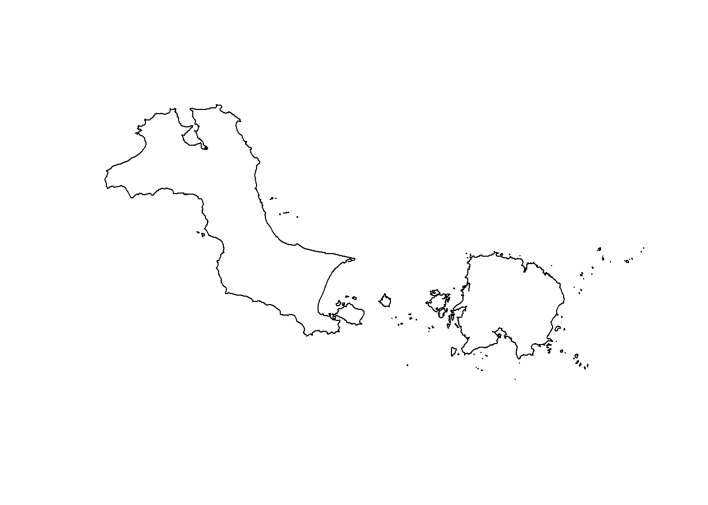
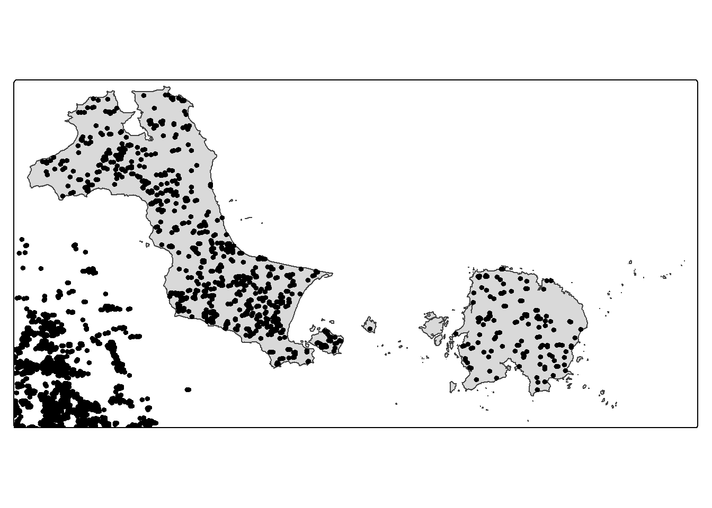
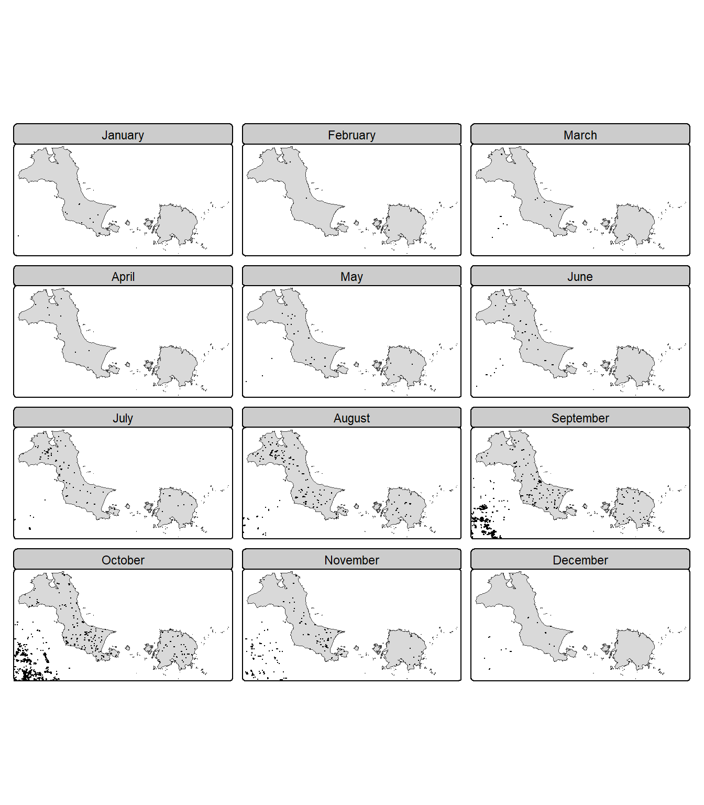
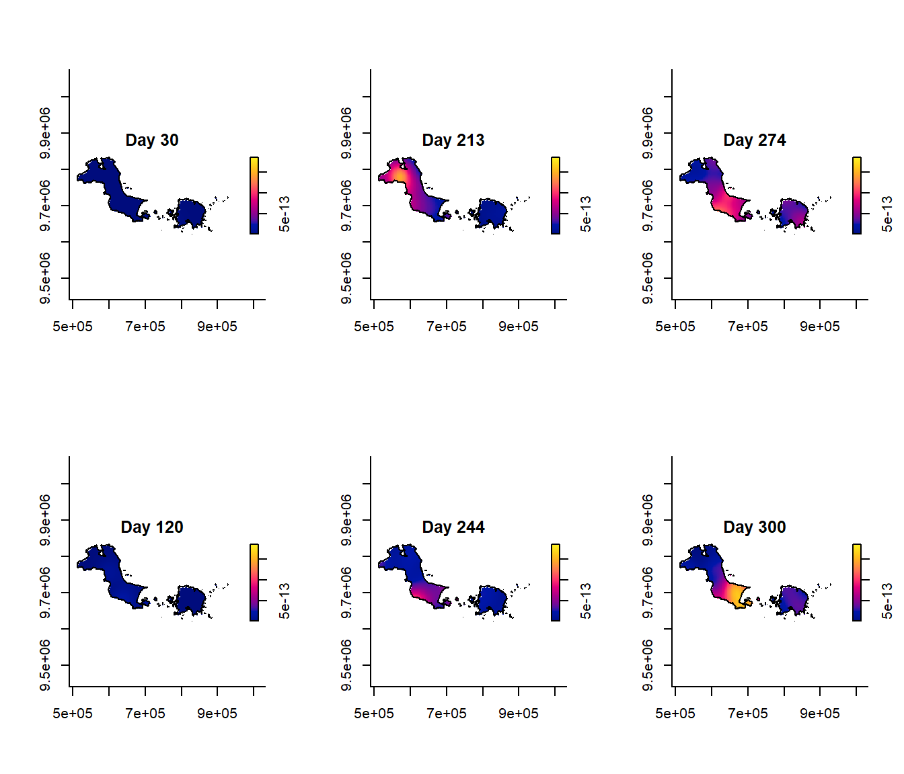
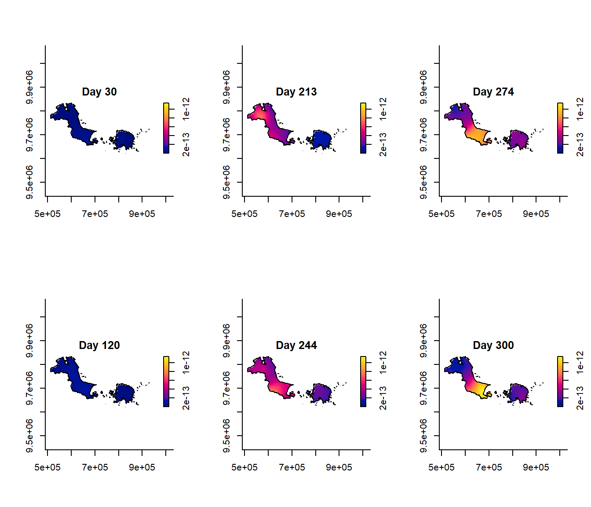
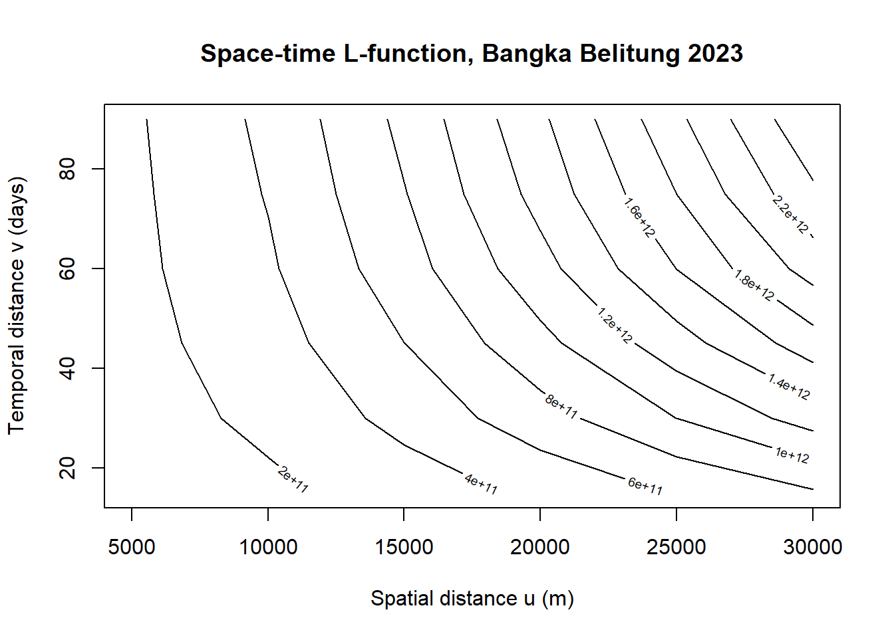

pacman::p_load(sf, spatstat, sparr, stpp, tmap, tidyverse, lubridate)Hands-on Exercise 4: Spatio-Temporal Point Pattern Analysis
Getting started
Ex03 was all first- and second-order analysis on a single snapshot in time — preschools just sitting there, no clock attached. This one adds the missing dimension: the density itself changes as time moves. Instead of one KDE surface, you get a stack of them, one per moment, and the interesting question becomes whether the hot spot actually travels or just sits still.
New package this time is sparr, which is built specifically for this — spattemp.density() gives a spatio-temporal KDE in one call, BOOT.spattemp() picks the bandwidths for you instead of guessing.
stpp and tmap are both new installs tonight — didn’t have them on this laptop before, and stpp in particular dragged in rpanel/splancs as dependencies, which took a bit to sort out. So the two sections further down that use them hadn’t actually been run before this render — wrote that code straight off the package documentation (checked the actual STIKhat/as.3dpoints/tm_shape signatures, not guessing), but didn’t have a confirmed working render until just now.
Data honesty note, upfront: the textbook chapter uses forestfires.csv — FIRMS MODIS fire detections for Indonesia, 2023, cropped to Kepulauan Bangka Belitung — plus a sub-district (kelurahan) boundary from Indonesia’s own geospatial portal. Neither file is on eLearn, and FIRMS’s own download tool turned out to be more fight than it was worth with this due tomorrow. What I used instead: a real MODIS active-fire archive, bulk-downloaded and split by country and year, and I pulled the 2023 Indonesia file out of it — so the year actually matches the chapter now, it’s genuinely 2023 satellite detections. The one thing still substituted is the boundary: I used geoBoundaries’ regency-level (ADM2) polygons for Bangka Belitung’s 7 regencies instead of the finer kelurahan shapefile, since I couldn’t track that one down either. Same region, same year, same method — just a coarser administrative boundary than the chapter’s. Flagging it here rather than letting it look like the exact original file.
Importing and preparing the data
bb_raw <- st_read("data/geospatial/BangkaBelitung.geojson")Reading layer `BangkaBelitung' from data source
`C:\Users\User\Desktop\Geospatial\Hands-on_Ex\Hands-on_Ex04\data\geospatial\BangkaBelitung.geojson'
using driver `GeoJSON'
Simple feature collection with 7 features and 5 fields
Geometry type: MULTIPOLYGON
Dimension: XY
Bounding box: xmin: 105.1084 ymin: -3.416903 xmax: 108.848 ymax: -1.501884
Geodetic CRS: WGS 84Same move as Ex03’s st_union() on the subzones: 7 separate regency polygons get dissolved into one outline for the whole island group, then reprojected to UTM zone 48S (EPSG:32748) — that’s the metric CRS the chapter uses for this part of Indonesia.
bb_sf <- bb_raw %>%
st_union() %>%
st_sf() %>%
st_transform(crs = 32748)
plot(st_geometry(bb_sf))
That’s Bangka on the left, Belitung on the right, plus a scatter of small islands around both — matches what Bangka Belitung actually looks like on a map, which was a decent sanity check that the regency list was right.
Fire data next. Raw CSV has one row per detection with latitude/longitude/acq_date among other columns (brightness, confidence, satellite — not using those here). Converting to sf points, reprojecting to match the boundary, then pulling out day-of-year and month since spattemp.density() needs a numeric time mark, not a date.
fires <- read_csv("data/aspatial/forestfires_2023.csv")
fires_sf <- fires %>%
st_as_sf(coords = c("longitude", "latitude"), crs = 4326) %>%
st_transform(crs = 32748) %>%
mutate(
acq_date = as.Date(acq_date),
DayofYear = yday(acq_date),
Month_num = month(acq_date),
Month_fac = factor(month.name[Month_num], levels = month.name)
)
nrow(fires_sf)[1] 41194,119 points inside the bounding box I filtered the country file down to before ever touching R. That box is generous though — wider than the actual island outline — so a fair number of these will fall in open water once checked against the real polygon.
Visualising the fire points
Before jumping into any density estimate, the chapter’s own move is to just look at where the dots land — tmap instead of base R plotting since it handles the sf objects directly and facets by month in one call.
tmap_mode("plot")
tm_shape(bb_sf) +
tm_polygons() +
tm_shape(fires_sf) +
tm_dots()
tm_shape(bb_sf) +
tm_polygons() +
tm_shape(fires_sf) +
tm_dots(size = 0.1) +
tm_facets(by = "Month_fac", free.coords = FALSE, drop.units = TRUE)
Should visually confirm the same thing Part 1’s KDE finds below — empty months at the start of the year, dots piling up around July–September.
Converting to spatstat’s ppp format
Same ppp + owin combination as Ex03, marks this time being DayofYear instead of nothing, since the whole point of this exercise is keeping the time dimension attached to every point.
bb_owin <- as.owin(bb_sf)
co <- st_coordinates(fires_sf)
fires_ppp <- ppp(co[, 1], co[, 2], window = bb_owin, marks = fires_sf$DayofYear)
fires_ppp <- fires_ppp[bb_owin]
fires_ppp$n[1] 899899 left out of 4,119 — a bigger drop than I expected, 3,220 points gone. Part of that’s just the loose bounding-box filter doing its job. But it’s also a bigger fraction than felt right at first, so I checked: some of it is almost certainly real MODIS detections sitting just offshore, not on land at all — Bangka is known for offshore tin dredging, and dredge platforms/mining barges run hot enough that MODIS’s fire-detection algorithm can flag them the same way it flags an actual fire. Worth keeping in mind reading the “fire” density below — a slice of what MODIS calls a fire pixel here is plausibly mining activity, not vegetation burning, and that’s a property of the sensor, not something specific to my substitute boundary.
summary(fires_ppp)Marked planar point pattern: 899 points
Average intensity 5.380728e-08 points per square unit
Coordinates are given to 10 decimal places
marks are numeric, of type 'double'
Summary:
Min. 1st Qu. Median Mean 3rd Qu. Max.
10.0 219.0 260.0 247.7 288.0 360.0
Window: polygonal boundary
166 separate polygons (no holes)
vertices area relative.area
polygon 1 972 1.15518e+10 6.91e-01
polygon 2 4 5.52353e+04 3.31e-06
polygon 3 4 2.71303e+05 1.62e-05
polygon 4 7 1.22230e+06 7.32e-05
polygon 5 11 1.19865e+06 7.17e-05
polygon 6 5 1.61208e+05 9.65e-06
polygon 7 7 9.72385e+04 5.82e-06
polygon 8 5 8.01867e+04 4.80e-06
polygon 9 5 1.15109e+05 6.89e-06
polygon 10 6 2.82441e+05 1.69e-05
polygon 11 4 1.61748e+05 9.68e-06
polygon 12 5 9.62914e+04 5.76e-06
polygon 13 8 1.38438e+05 8.29e-06
polygon 14 16 3.15251e+06 1.89e-04
polygon 15 10 2.30273e+06 1.38e-04
polygon 16 3 4.93646e+04 2.95e-06
polygon 17 4 4.39216e+04 2.63e-06
polygon 18 3 5.15383e+04 3.08e-06
polygon 19 3 8.61068e+03 5.15e-07
polygon 20 750 4.61633e+09 2.76e-01
polygon 21 4 5.82890e+04 3.49e-06
polygon 22 3 1.79418e+04 1.07e-06
polygon 23 4 6.61881e+04 3.96e-06
polygon 24 8 1.44528e+06 8.65e-05
polygon 25 3 1.34860e+04 8.07e-07
polygon 26 3 1.63158e+04 9.77e-07
polygon 27 4 6.47358e+04 3.87e-06
polygon 28 3 1.43257e+04 8.57e-07
polygon 29 3 2.11344e+04 1.26e-06
polygon 30 7 1.83485e+05 1.10e-05
polygon 31 3 2.07092e+04 1.24e-06
polygon 32 3 1.21024e+04 7.24e-07
polygon 33 3 1.25179e+04 7.49e-07
polygon 34 3 1.48894e+04 8.91e-07
polygon 35 5 7.22322e+04 4.32e-06
polygon 36 4 7.47054e+04 4.47e-06
polygon 37 3 3.32508e+04 1.99e-06
polygon 38 5 2.15573e+05 1.29e-05
polygon 39 10 1.14421e+06 6.85e-05
polygon 40 4 1.97234e+05 1.18e-05
polygon 41 3 3.29659e+04 1.97e-06
polygon 42 3 1.85400e+04 1.11e-06
polygon 43 12 2.22646e+06 1.33e-04
polygon 44 3 2.85195e+04 1.71e-06
polygon 45 5 8.03029e+04 4.81e-06
polygon 46 3 2.36333e+04 1.41e-06
polygon 47 7 5.03517e+05 3.01e-05
polygon 48 4 4.95921e+04 2.97e-06
polygon 49 4 6.50527e+04 3.89e-06
polygon 50 12 1.03324e+06 6.18e-05
polygon 51 7 2.14381e+05 1.28e-05
polygon 52 4 3.35785e+04 2.01e-06
polygon 53 7 8.43923e+05 5.05e-05
polygon 54 5 9.12163e+04 5.46e-06
polygon 55 13 3.89789e+05 2.33e-05
polygon 56 3 1.99295e+04 1.19e-06
polygon 57 6 9.27007e+04 5.55e-06
polygon 58 6 3.14806e+04 1.88e-06
polygon 59 7 3.87331e+05 2.32e-05
polygon 60 5 4.15080e+05 2.48e-05
polygon 61 47 1.77006e+07 1.06e-03
polygon 62 4 2.17224e+05 1.30e-05
polygon 63 4 8.11440e+04 4.86e-06
polygon 64 98 4.78925e+07 2.87e-03
polygon 65 112 1.19531e+08 7.15e-03
polygon 66 18 3.69323e+06 2.21e-04
polygon 67 4 8.13274e+04 4.87e-06
polygon 68 6 6.68740e+04 4.00e-06
polygon 69 4 2.78888e+04 1.67e-06
polygon 70 4 2.89101e+04 1.73e-06
polygon 71 8 1.41673e+06 8.48e-05
polygon 72 15 3.74263e+06 2.24e-04
polygon 73 13 3.64500e+06 2.18e-04
polygon 74 3 1.61822e+04 9.69e-07
polygon 75 7 2.14775e+05 1.29e-05
polygon 76 19 7.09955e+06 4.25e-04
polygon 77 8 1.73607e+05 1.04e-05
polygon 78 7 2.05677e+06 1.23e-04
polygon 79 105 2.13014e+08 1.27e-02
polygon 80 5 1.76854e+05 1.06e-05
polygon 81 9 1.59859e+06 9.57e-05
polygon 82 3 3.15646e+04 1.89e-06
polygon 83 61 2.25281e+07 1.35e-03
polygon 84 16 2.43687e+06 1.46e-04
polygon 85 3 2.65057e+04 1.59e-06
polygon 86 3 1.25332e+04 7.50e-07
polygon 87 6 5.54606e+05 3.32e-05
polygon 88 6 1.05070e+06 6.29e-05
polygon 89 7 4.10680e+05 2.46e-05
polygon 90 5 3.21451e+05 1.92e-05
polygon 91 10 1.15656e+06 6.92e-05
polygon 92 4 5.09016e+04 3.05e-06
polygon 93 4 5.37866e+04 3.22e-06
polygon 94 4 4.59354e+04 2.75e-06
polygon 95 4 2.11056e+04 1.26e-06
polygon 96 4 2.48302e+04 1.49e-06
polygon 97 15 5.16472e+06 3.09e-04
polygon 98 19 1.77557e+06 1.06e-04
polygon 99 4 3.18341e+04 1.91e-06
polygon 100 12 3.07555e+06 1.84e-04
polygon 101 4 1.39730e+05 8.36e-06
polygon 102 7 4.57652e+05 2.74e-05
polygon 103 3 4.35533e+04 2.61e-06
polygon 104 4 9.95883e+04 5.96e-06
polygon 105 4 8.39710e+04 5.03e-06
polygon 106 8 1.31312e+06 7.86e-05
polygon 107 5 2.09401e+05 1.25e-05
polygon 108 3 1.21280e+04 7.26e-07
polygon 109 7 1.85681e+06 1.11e-04
polygon 110 4 4.31833e+04 2.58e-06
polygon 111 7 6.60441e+05 3.95e-05
polygon 112 7 8.15940e+05 4.88e-05
polygon 113 14 3.96656e+06 2.37e-04
polygon 114 8 4.31229e+05 2.58e-05
polygon 115 4 3.76481e+04 2.25e-06
polygon 116 6 7.23993e+05 4.33e-05
polygon 117 4 3.08229e+05 1.84e-05
polygon 118 3 2.06334e+04 1.23e-06
polygon 119 23 7.36520e+06 4.41e-04
polygon 120 5 2.32145e+05 1.39e-05
polygon 121 4 3.82403e+04 2.29e-06
polygon 122 3 6.07853e+04 3.64e-06
polygon 123 4 5.72581e+04 3.43e-06
polygon 124 3 1.48414e+04 8.88e-07
polygon 125 4 3.66299e+05 2.19e-05
polygon 126 3 4.65963e+04 2.79e-06
polygon 127 15 3.92372e+06 2.35e-04
polygon 128 5 4.33959e+05 2.60e-05
polygon 129 6 4.96159e+05 2.97e-05
polygon 130 4 6.68707e+04 4.00e-06
polygon 131 3 2.99676e+04 1.79e-06
polygon 132 14 1.25380e+06 7.50e-05
polygon 133 6 7.55594e+05 4.52e-05
polygon 134 4 1.65543e+05 9.91e-06
polygon 135 8 2.82780e+05 1.69e-05
polygon 136 5 3.90974e+05 2.34e-05
polygon 137 27 1.62599e+07 9.73e-04
polygon 138 12 1.39947e+06 8.38e-05
polygon 139 8 2.21254e+06 1.32e-04
polygon 140 3 1.57797e+04 9.44e-07
polygon 141 8 1.15978e+06 6.94e-05
polygon 142 3 3.33351e+04 2.00e-06
polygon 143 4 1.06614e+05 6.38e-06
polygon 144 6 4.37427e+04 2.62e-06
polygon 145 6 4.83872e+05 2.90e-05
polygon 146 4 9.23055e+04 5.52e-06
polygon 147 7 3.71832e+05 2.23e-05
polygon 148 15 3.38528e+06 2.03e-04
polygon 149 3 2.50495e+04 1.50e-06
polygon 150 4 2.52480e+04 1.51e-06
polygon 151 5 1.67399e+05 1.00e-05
polygon 152 4 1.13606e+05 6.80e-06
polygon 153 5 5.04469e+04 3.02e-06
polygon 154 13 2.23775e+06 1.34e-04
polygon 155 4 6.37252e+04 3.81e-06
polygon 156 12 1.02457e+06 6.13e-05
polygon 157 4 8.79862e+04 5.27e-06
polygon 158 4 1.66575e+05 9.97e-06
polygon 159 6 2.60576e+05 1.56e-05
polygon 160 3 1.92124e+04 1.15e-06
polygon 161 4 6.06838e+04 3.63e-06
polygon 162 9 1.14617e+06 6.86e-05
polygon 163 4 1.58161e+04 9.47e-07
polygon 164 4 1.29217e+05 7.73e-06
polygon 165 6 2.02654e+05 1.21e-05
polygon 166 3 1.06955e+05 6.40e-06
enclosing rectangle: [512053.7, 928099.7] x [9621818, 9833975] units
(416000 x 212200 units)
Window area = 16707800000 square units
Fraction of frame area: 0.189Part 1 — Spatio-temporal KDE: does the hot spot move over the year?
spattemp.density() does the trivariate smoothing — two spatial dimensions plus time — and picks its own bandwidths by default the same way bw.ppl() etc. did in Ex03, just for three dimensions instead of two.
st_kde <- spattemp.density(fires_ppp)
st_kdeSpatiotemporal Kernel Density Estimate
Bandwidths
h = 19155.99 (spatial)
lambda = 6.4456 (temporal)
No. of observations
899 Default spatial bandwidth landed around 19.2km, temporal around 6.4 days — tighter spatially than I expected, but still wide relative to the year. Plotting six snapshots across the year, fixing the colour scale so the panels are actually comparable to each other:
tims <- c(30, 120, 213, 244, 274, 300)
par(mfcol = c(2, 3))
for (i in tims) {
plot(st_kde, i, override.par = FALSE, fix.range = TRUE, main = paste0("Day ", i))
}
Days 30 and 120 (January, April/May) are flat — nothing burning yet. Day 213 (start of August) is when a hot spot appears on the northwest side of Bangka, and it just keeps intensifying from there: day 244 (start of September) it’s spread across western Bangka and reached Belitung, and by day 274–300 (start of October through late October) western Bangka is lit up as bright as this dataset gets. Checking the raw monthly counts backs this up — September and October alone account for 1,395 and 1,882 of the 4,119 detections respectively, versus single or low double digits from January through April. 2023 was an El Niño year in Indonesia, so a fire season this late and this intense tracks with what actually happened — the dry season ran longer and worse than a typical year, and that shows up here without me having to argue for it.
Part 2 — Bootstrap bandwidth selection
Default bandwidths above were picked automatically, but sparr has a proper optimiser for the spatio-temporal case — BOOT.spattemp(), doing for two bandwidths at once roughly what bw.diggle etc. did for one in Ex03. Fair warning: this one’s slow, close to a minute even on a fairly small point set, since it’s bootstrapping over both dimensions together.
bw_boot <- BOOT.spattemp(fires_ppp, verbose = FALSE)
bw_boot h lambda
21909.02939 19.78252 Spatial bandwidth barely moved (about 21.9km vs. 19.2km default), but the temporal one changed a lot — around 19.8 days instead of 6.4. Re-running the density with those and plotting the same six days:
st_kde_opt <- spattemp.density(fires_ppp, h = bw_boot["h"], lambda = bw_boot["lambda"])
par(mfcol = c(2, 3))
for (i in tims) {
plot(st_kde_opt, i, override.par = FALSE, fix.range = TRUE, main = paste0("Day ", i))
}
Same overall story, smoother picture — the western-Bangka hot spot at day 274/300 is a touch less peaky than with the default bandwidth, since a wider temporal window (19.8 days vs. 6.4) pools in more nearby detections per snapshot. Makes each panel a less noisy estimate at the cost of blurring the day-to-day detail slightly. This is basically the 2D bandwidth-choice lesson from Ex03 again, just now there are two bandwidths to get right instead of one.
Part 3 — Space-time K-function: is the clustering statistically real?
Same first-order-vs-second-order distinction as Ex03: everything above (KDE, STKDE) shows where and when it’s dense, but doesn’t actually test whether that’s more clustered than chance would produce. stpp’s STIKhat() is the space-time equivalent of Ex03’s Kest()/envelope() — counts point pairs within a given distance and time gap, compares that to what’s expected under a random process.
STIKhat() wants a plain (x, y, t) matrix, not a ppp — as.3dpoints() builds that from the same clipped points used above, so the point count here matches fires_ppp$n from earlier.
xyt <- as.3dpoints(fires_ppp$x, fires_ppp$y, marks(fires_ppp))Leaving s.region/t.region out below, which makes STIKhat() fall back to the bounding box of the data and the full day-of-year range — the archipelago’s actual outline is a 166-piece multipolygon (all those small islands), and STIKhat() wants a single simple polygon for s.region, so the bounding box is the pragmatic choice here rather than something I’d want to fight with the night before this is due.
stik <- STIKhat(xyt, dist = seq(0, 30000, 5000), times = seq(0, 90, 15))stpp ships its own plotK() helper for this, and the chapter uses it — but it turns out to be broken inside a Quarto/knitr render specifically. Looked at its source after the first render came back with the K-function section silently missing (no error, just no picture): plotK() checks dev.list(), and if a graphics device is already open — which it always is mid-chunk, that’s how knitr captures plots — it closes it and calls dev.new() to open a fresh one. Knitr never sees that new device, so the plot draws somewhere it can’t capture, and the chunk finishes clean with nothing to show for it. Not a mistake in the code that got run, just a genuine bug in how plotK() behaves outside an interactive R session. Skipping it and calling contour() directly on the same numbers instead — stik$Khat and stik$Ktheo are exactly what plotK() would have plotted anyway:
contour(stik$dist, stik$times, stik$Khat - stik$Ktheo,
xlab = "Spatial distance u (m)", ylab = "Temporal distance v (days)",
main = "Space-time L-function, Bangka Belitung 2023")
If this is genuinely clustered in both space and time together (not just space, not just time), the contour should bulge outward at short distances and short time gaps — i.e. fires close in space keep showing up close in time too, past what you’d get from a homogeneous random process over the year. Worth comparing this contour against the raw monthly counts and the STKDE panels above: all three should be telling the same story if the analysis holds together.
Notes and open questions
Two substitutions worth restating: the fire data is genuine 2023 MODIS detections, just pulled from a bulk country archive instead of FIRMS’s own forestfires.csv, and the boundary is geoBoundaries’ regency-level polygons instead of the finer kelurahan shapefile the chapter uses. Couldn’t get to either original source in time, but same region, same year, same method throughout.
One thing worth trying later: separating out the offshore detections near Bangka’s coast before running any of this again, since a chunk of them are plausibly tin-mining heat signatures rather than actual vegetation fires — right now they’re sitting in the same point pattern as everything else. That’d also be the moment to fix STIKhat()’s s.region, which fell back to the plain bounding box instead of the archipelago’s real outline (that outline is 166 separate polygons and STIKhat() wants one simple one). Both of those are pulling the same direction — a decent stretch of open water is currently being counted as study area — so fixing them together would probably sharpen every result above, not just Part 3’s.